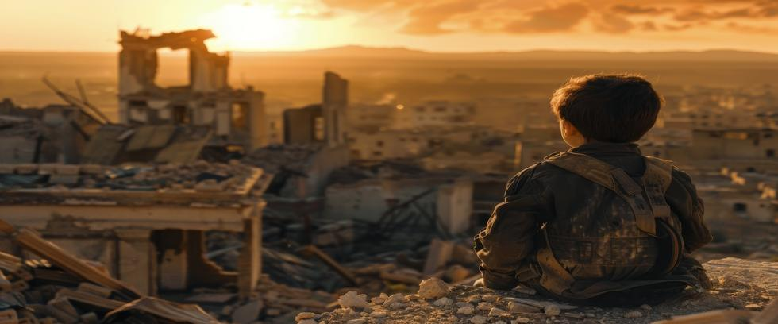

On August 6, 1945, a B-29 bomber named Enola Gay flew over the city of Hiroshima, Japan. At 8:15 AM, it released a small, untested atomic bomb they ironically named Little Boy.
The bomb fell forty-three seconds to an altitude of 1,900 feet before detonating. The flash was brighter than the sun. Tens of thousands were instantly vaporized as the world crossed a threshold difficult to uncross.
A Blinding Flash of Light
A Hiroshima Communications Hospital doctor remembered the morning as warm and beautiful. The familiar sound of air raid sirens drew little attention as three bright specks appeared high in the sky. Similar aircraft had flown over for days without incident, but everyone looked up at the B-sans anyway.
Suddenly, there was a blinding flash of light – the last thing many would ever see.
No one on the ground had a clue what happened as the temperature in the epicenter reached ten million degrees in millionths of a second. People outdoors less than a kilometer away were charred to smoking black things, unrecognizable as human. Distant birds burst into flames in midair.
So strong was the flash, it projected black-and-white, freeze-frame images onto the city. Anything blocking the light protected what was behind it, forming bizarre silhouettes of plants, animals, and people on wood, steel, and concrete.
Exposed skin further away from ground-zero developed a permanent sunburnt appearance, as odd images formed on undamaged skin where the flesh had been shaded by eyeglasses, a hand, or the branches of a tree.
The Morning of That Day
Little Boy eventually killed over 220,000 Japanese citizens, at least by the City of Hiroshima and US Department of Energy estimates. But it still might be useful to look back at the morning of that day. Why? To place our own children’s faces in that image. Our own little boys and girls are stumbling blind, crying in pain as they suffer and die. Such is the fate we beckon by living on the edge with nuclear weapons.
What happened at Hiroshima was more than an end to a war – it was the beginning of a still unresolved era in which we may yet end our civilization and kill nearly every human being on Earth.
Sending the Message
The end was inevitable by August of 1945. Japan’s air force and navy were shattered, its cities lay in ruins, and its people were starving. Japan had already sued for peace, with the final obstacle being a provision that the Emperor be allowed to retain his position – a condition the US finally accepted six days after nuking Hiroshima.
Many still wonder why America dropped an atomic bomb on a city full of civilians after rejecting the terms of a surrender that it accepted less than a week later. The official reason given by President Harry Truman was that it “saved American lives” by avoiding an invasion of the Japanese homelands.
But Little Boy was also a symbol of power for many in Washington—undeniable proof of Yankee ingenuity and unwavering resolve. For others, it was a message meant for Japan’s military and Emperor Hirohito that their position was hopeless.
As Little Boy fell toward Hiroshima, the graffiti scrawled on its side said it all: “Greetings to the Emperor from the men of the Indianapolis." The reference was to a ship named Indianapolis, a Navy cruiser sunk by Japanese torpedoes after delivering atomic bomb components to Tinian Island for final assembly.
Emperor Hirohito was the spiritual and political leader of Japan, and US policymakers believed that shocking him into surrender might end the war faster than negotiations.
But declassified War Department records, and subsequent statements by senior military officers, tell a more complicated story. The bomb meant to end the war also sent a political message to Joseph Stalin, who was watching with interest from the Kremlin.
Not a Random City
Hiroshima was not chosen at random. Military planners had avoided bombing it so Little Boy’s full effects could be evaluated. But there was another reason as well: the awesome power of symbolism.
Hiroshima was a major military command center and an important industrial hub, but it was mostly a civilian city filled with schools, hospitals, and markets. By obliterating it with a single bomb, the United States had made a powerful statement to Japan’s leadership – surrender or everyone dies.
Little Boy was anything but small, tipping the scales at nearly 10,000 pounds. Yet it held only 64 kilograms of enriched uranium – the explosive equivalent to 15,000 tons of TNT.
The blast flattened commercial and residential buildings within a mile of ground zero. A raging fireball consumed nearly five square miles of the city within minutes. When the smoke finally cleared, a radioactive wasteland materialized that lived in survivors’ memories for life.
The Emperor’s Awakening
For Emperor Hirohito, Little Boy shattered more than his will to fight—it destroyed the aura of divine invincibility that surrounded his throne.
When news reached the Imperial Palace, Hirohito requested details about the weapon and the scale of destruction. When told that the entire city had been destroyed by one bomb, the stunned Emperor quietly replied, “This is not war. This is the end of the world.”
Three days after Hiroshima, another atomic bomb named Fat Man destroyed Nagasaki. Emperor Hirohito, who had strongly opposed surrender, reluctantly recorded a radio address accepting the terms of the Potsdam Declaration. It was the first time the Japanese people had ever heard his voice.
This was the reaction American leaders had hoped for, but few realized at the time how Little Boy had started a nuclear arms race that still threatens our lives and our civilization to this day.
A Larger Audience
A day after declaring war on Japan, the Soviet Union attacked Japanese-occupied Manchuria with a million soldiers. Would Stalin press on from there? We can only speculate, since Truman used Little Boy before the Soviets could act. But the message was clear: Watch out, Stalin! We can nuke you, too.
Joseph Stalin accelerated his nuclear weapons program after witnessing the effects of atomic bombs on Japan. His efforts paid off four years after Hiroshima with the successful test of an atomic bomb named First Lightning. The nuclear arms race had begun.
The Human Cost
The political fallout from Hiroshima was costly. The human toll was staggering.
Children wandered through smoking ruins, stepping over corpses and calling for parents. Hospitals overflowed with victims that doctors could not save. Survivors described “black rain”—a radioactive mixture of soot, fallout, and water that fell from the sky and clung stubbornly to flesh. Radiation sickness and death followed.
A common estimate is that 70,000 people died within a day or two. By the end of the year, more than 140,000 deaths were recorded as radiation sickness and burn fatalities took their toll.
Surrender spared Japan from further destruction, but for those in Hiroshima, the price had already been paid.
The Curious Debate
Was nuking Hiroshima necessary? Historians remain oddly divided.
Traditionalists argue that dropping Little Boy saved countless lives by ending the war without a costly land invasion.
Revisionists counter that Japan was already seeking peace, and the bombings were primarily a warning to the Soviet Union.
Moderates believe the bomb hastened surrender, but was not the decisive factor. The Soviet Union’s declaration of war and its military victories in Manchuria were major considerations.
But any way you slice it, uncomfortable facts remain: Japan had already lost the war, and Little Boy was partly a display of dominance meant to influence the postwar world.
The Emperor’s Response
In his surrender speech on August 15, Emperor Hirohito avoided mentioning the atomic bombs. Instead, he spoke of “a new and most cruel bomb” whose power could destroy civilization. He urged his people to “endure the unendurable” and accept surrender for the sake of survival.
Nor did Hirohito mention the Soviet threat, but unclassified documents reveal how the declaration of war by the Soviet Union was indeed a major factor. Japan may have lost the war, but the Japanese people are not stupid. They feared a Soviet occupation far more than an American one.
The Emperor’s speech was unprecedented in Japanese history. The divine voice that once called for victory now spoke of peace, surrender, and endurance.
Emperor Hirohito lived until 1989 – long enough to witness his country’s rebirth and the Cold War proliferation of the very weapons that ended his empire. How would he view modern Japanese politicians who speak openly today about building nuclear weapons to counter China’s growing threat?
A Hundred Little Boys
The bomb that ended World War II also began the nuclear arms race. Little Boy was built for war, but nuclear weapons became a permanent fixture of geopolitics.
Today, more than 12,000 nuclear weapons still remain. Some carry the destructive power of more than a hundred Little Boys. But humanity still suffers the same tragic illusion as before: that deterrence through fear can ensure peace.
The Path Forward
At Our Planet Project Foundation, we believe that genuine security cannot come from weapons poised to destroy our civilization at the order of just a few men. Little Boy’s legacy should not be a celebration of victory, but a warning that nuclear weapons’ capacity for destruction should never be mistaken for diplomacy.
If Little Boy was a message to the Emperor, then let its Cold War legacy be a message for us all: Nuclear arsenals that can destroy our civilization will eventually do just that unless deliberate action is taken to prevent it. The only sure way to ensure our survival is to eliminate nuclear weapons entirely.